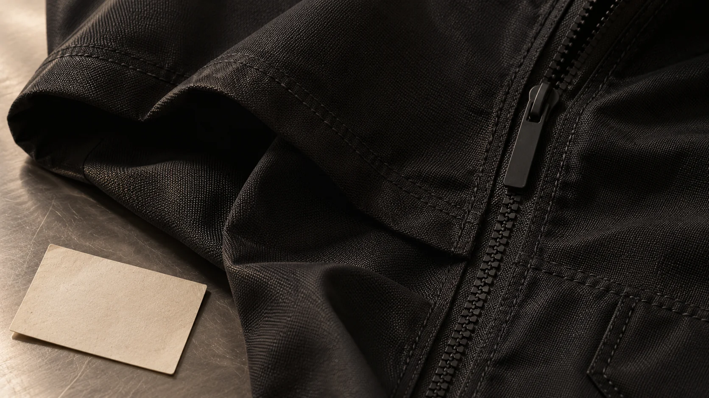

Sportswear / Performance
Adidas · Nike
Fashion competitive intelligence
Assortimenti. Prezzi. Disponibilità.
Leggere i prodotti per comprendere il contesto.
Archivio immaginario / Illustrazione generata con AI
Una lettura comparativa di assortimenti, prezzi e disponibilità. Dai dati di catalogo alle domande che orientano una decisione.
Adattamento pubblico di un benchmark. Solo aggregati attribuiti a cataloghi pubblici; dati storici e interpretazioni mantenuti distinti.
marchi, incluso il riferimento
prodotto, prezzo, cadenza, disponibilità, digitale
record Bolovo nel rapporto storico
Bolovo come denominatore, non come obiettivo

Un capo è parte di un assortimento. Un prezzo è parte di una gerarchia. Una collezione è parte di un calendario.
Il benchmark mette in relazione questi segnali, esplicita i limiti del campione e apre domande verificabili.
Vai alla matrice comparativa ↗Non basta affiancare i numeri. Il benchmark deve esplicitare cosa viene contato, in quale mercato e con quale copertura. I quattro gruppi contestualizzano modelli commerciali diversi.
| Marchio / gruppo | Pubblico / linee | Perimetro analizzato |
|---|---|---|
|
Bolovo
Riferimento |
Unisex Abbigliamento, accessori e oggetti |
Catalogo /tudo Dichiarato completo |
|
Adidas
Sportswear / Performance |
Uomo, donna, bambino, unisex Performance · Originals · Sportswear · TERREX |
Abbigliamento e accessori; scarpe escluse Perimetro selezionato |
|
Nike
Sportswear / Performance |
Uomo, donna, bambino, unisex Jordan · SNKRS · calcio |
Abbigliamento e accessori; scarpe escluse Perimetro selezionato |
|
High Company
Streetwear |
Unisex; Girlz come collezione Abbigliamento e accessori |
Catalogo corrente nel rapporto Dichiarato completo |
|
PIET
Streetwear |
Nessuna divisione uomo/donna esplicita nel rapporto Collezioni e collaborazioni |
Catalogo attivo stimato Stima |
|
Carnan
Streetwear |
Man · Woman Standard Line · borse e pelletteria |
Catalogo pubblico e sezioni Standard / New In Perimetro selezionato |
|
Welcome Rio
Streetwear |
Nessuna divisione uomo/donna nei dati riportati Abbigliamento, calzature, gioielli e accessori |
Catalogo e nuovi arrivi Perimetro selezionato |
|
Vans
Streetwear |
Uomo, donna, unisex Offerta principale · Lx |
Abbigliamento e accessori stimati Stima |
|
Class
Streetwear |
Unisex Abbigliamento e accessori; struttura per drop |
Fall 26; collaborazioni come contesto Una collezione |
|
Patagonia
Outdoor / Lifestyle |
Uomo, donna, bambino, neonato, unisex Capilene · Nano Puff · Better Sweater · Torrentshell · Houdini · Baggies |
Abbigliamento, bambino, zaini e attrezzatura Perimetro selezionato |
|
The North Face
Outdoor / Lifestyle |
Uomo, donna, bambino, unisex Summit Series · Nuptse · FUTURELIGHT · DryVent · Gore-Tex |
Abbigliamento adulto e attrezzatura Perimetro selezionato |
|
Osklen
Premium brasiliano |
Men · Women e-fabrics · Pirarucu |
Abbigliamento e accessori; bazar e scarpe esclusi Perimetro selezionato |
|
Reserva
Premium brasiliano |
Perimetro: uomo adulto; portfolio con GO e Mini Reserva · GO · Mini · Sprint |
Uomo adulto; liquidazione esclusa Perimetro selezionato |
Adidas · Nike
High Company · PIET · Carnan · Welcome Rio · Vans · Class
Patagonia · The North Face
Osklen · Reserva
Profondità del catalogo, categorie, famiglie e segmenti. Separare prodotto, variante e SKU prima di confrontare i volumi.
Media del campione, mediana, fasce e massimo. Specificare valuta, mercato e trattamento delle promozioni.
Collezioni, capsule, collaborazioni e nuovi arrivi. Il numero di prodotti attivi non ricostruisce il volume iniziale di un drop.
Indisponibilità totale e parziale della gamma taglie come metriche distinte. Uno snapshot non misura vendite o sell-through.
Menu, pagine di collezione e territorio editoriale. I giudizi qualitativi richiedono esempi datati; in questa versione non si pubblicano valutazioni del feed social.
Una fotografia del catalogo riportato: categorie, fasce di prezzo e cluster. I grafici descrivono la composizione del campione; non la quota di fatturato o le unità vendute.
valore non arrotondato: R$ 332,72
BRL; massimo riportato R$ 1.999
34 su 426 record; non misura il sell-through
279 su 426 prodotti nel campione
Indice = valore del marchio ÷ valore Bolovo × 100. Gli indici sono ricalcolati dai valori riportati. Il prezzo non viene indicizzato tra valute diverse; un dato mancante resta mancante.
| Marchio | Gruppo / copertura | Record | Indice scala | Prezzo medio BRL | Indice prezzo | Indisp. totale | Indisp. parziale |
|---|---|---|---|---|---|---|---|
| Bolovo | Riferimento Dichiarato completo |
426 | 100 | 332,72 BRL | 100 | 8% | Non rilevata |
| Adidas | Sportswear / Performance Perimetro selezionato |
4.344 | 1020 | Non disponibile | — | Non rilevata | Non rilevata |
| Nike | Sportswear / Performance Perimetro selezionato |
3.045 | 715 | Non disponibile | — | Non rilevata | Non rilevata |
| High Company | Streetwear Dichiarato completo |
402 | 94 | 273,32 BRL | 82 | 14,2% | 51,5% |
| PIET | Streetwear Stima |
125 | 29 | 480,00 BRL | 144 | Non rilevata | Non rilevata |
| Carnan | Streetwear Perimetro selezionato |
154 | 36 | 640,32 BRL | 192 | 0% | 37% |
| Welcome Rio | Streetwear Perimetro selezionato |
147 | 35 | 476,98 BRL | 143 | 1,4% | 51,7% |
| Vans | Streetwear Stima |
1.000 | 235 | 250,00 BRL | 75 | Non rilevata | Non rilevata |
| Class | Streetwear Una collezione |
68 | 16 | 374,59 BRL | 113 | 20,6% | 41,2% |
| Patagonia | Outdoor / Lifestyle Perimetro selezionato |
1.355 | 318 | Non disponibile | — | Non rilevata | Non rilevata |
| The North Face | Outdoor / Lifestyle Perimetro selezionato |
502 | 118 | Non disponibile | — | Non rilevata | Non rilevata |
| Osklen | Premium brasiliano Perimetro selezionato |
964 | 226 | 855,95 BRL | 257 | 0% | 33,6% |
| Reserva | Premium brasiliano Perimetro selezionato |
2.922 | 686 | 444,04 BRL | 133 | 31,5% | Non rilevata |
Indisponibilità totale e parziale hanno denominatori non uniformemente documentati: non confrontarle come la stessa misura. Per Bolovo il dato riguarda il record catturato, non l’intera gamma taglie. “0%” è un valore riportato; “non rilevata” indica assenza di dato.
Distribuzioni per categoria e prezzo conservate dal rapporto. Le selezioni mostrate non sempre coprono il 100%: sono estratti, non ricostruzioni complete. I prezzi Patagonia sono in USD e non entrano negli indici BRL.
Il rapporto non contiene una distribuzione operativa equivalente per questo marchio. Non sono stati generati dati sostitutivi.
Il rapporto non contiene una distribuzione operativa equivalente per questo marchio. Non sono stati generati dati sostitutivi.
Le letture seguenti sono ipotesi indipendenti formulate per questo portfolio. Non riproducono piani commerciali riservati e non attribuiscono ai marchi intenzioni o risultati non documentati.
Nel rapporto, la media Bolovo è R$ 332,72 e la mediana R$ 250. I prodotti nella fascia R$ 200–499 sono 279 su 426, pari al 65,5%.
Una media aggregata può risentire del peso degli accessori e degli oggetti. Non descrive da sola il posizionamento del solo abbigliamento.
Ricalcolare mediane e distribuzioni per categoria omogenea prima di proporre un cambiamento di prezzo.
I perimetri riportati vanno da una singola collezione Class a cataloghi multi linea. Patagonia include bambino e attrezzatura e usa USD.
La distanza fra volumi riflette anche differenze di mercato, copertura e modello commerciale. Un indice descrittivo non è una classifica di performance.
Confrontare abbigliamento adulto, stesso mercato, stessa data e stesso livello di deduplicazione; tenere separati i prezzi in USD.
Per High sono riportati 14,2% di indisponibilità totale e 51,5% parziale; per Bolovo 8,0% sul record catturato. Sono definizioni diverse.
Una taglia assente può dipendere da domanda, riassortimento, ampiezza della gamma o problemi di acquisizione. Non dimostra scarsità pianificata.
Monitorare nel tempo prodotto, colore e taglia con definizioni uniformi. Servono dati di vendita autorizzati per valutare il sell-through.
I cluster Bolovo riportano 67 prodotti Go Out e 45 Home Video. Le voci possono sovrapporsi e rappresentano prodotti attivi nel campione.
L’architettura delle collezioni suggerisce come il catalogo viene organizzato; non dimostra frequenza dei lanci, inventario iniziale o successo commerciale.
Affiancare alle pagine di collezione un archivio datato dei lanci. Testare la leggibilità della navigazione prima di attribuirle un impatto sulle conversioni.
Il rapporto descrive una raccolta da cataloghi pubblici, navigazione manuale e profili social aperti. Questa edizione non replica la raccolta: presenta gli aggregati disponibili e rende esplicito ciò che non è verificabile.
Registrare URL, data, mercato, valuta e copertura per ogni catalogo. Il rapporto cita HTML, JSON-LD e interfacce pubbliche di e-commerce; mancano gli estratti e gli script necessari a verificarne l’esecuzione.
Deduplicare per ID o handle. Distinguere prodotto da variante e SKU. Uniformare categorie, separare liquidazione e disponibilità e mantenere mercati e valute espliciti.
Calcolare gli indici da denominatori dichiarati. Separare conteggi, stime e giudizi. Una fotografia del catalogo non ricostruisce domanda, margini, stock fisico o performance di vendita.
Il rapporto dichiara fonti pubbliche. CSV, snapshot e script di raccolta non sono stati forniti. I valori non sono stati verificati nuovamente. Il riferimento al 2026 proviene dal rapporto; le date per marchio mancano. I domini elencati sono punti di ingresso dichiarati, non URL verificati delle catture. La verifica dell’identità visiva Raw Data Club è del 5 novembre 2026.
Il documento alterna “SKU” e “prodotto unico”. Qui si usa “record” per non affermare un livello di dettaglio non dimostrato. I volumi di campioni completi, stimati o limitati a una collezione non hanno la stessa copertura.
Il rapporto dichiara la rimozione dei tag di liquidazione dalla matrice comparativa. Questo non prova che tutte le medie siano calcolate sui prezzi pieni. In assenza dei record di prezzo, il trattamento delle promozioni resta da verificare. Nessuna percentuale di sale viene usata come misura di indisponibilità.
Le percentuali totali e parziali sono tenute separate. Non è documentato in modo uniforme se la base sia il prodotto, il colore o la variante. Un’indisponibilità elevata non dimostra domanda elevata, scarsità intenzionale o velocità di vendita.
13 marchi significa 12 concorrenti più Bolovo. Gli indici sono ricalcolati con base 426: Adidas 1.020 e Nike 715, invece degli indici non coerenti presenti nel testo originario. Alcuni grafici del rapporto aggiungevano due simboli percentuali o usavano il conteggio come percentuale; questa edizione usa unità e denominatori espliciti. I 34 record non dettagliati per categoria sono un residuo aritmetico, non una nuova osservazione.
Nessuna corrispondenza privata, contatto personale, condizione commerciale, credenziale o raccomandazione riservata. Nessuna valutazione qualitativa negativa dei marchi viene presentata come fatto. Non sono stati creati risultati sintetici per colmare dati mancanti.
Ogni aggregato proviene dal rapporto HTML fornito dall’autore. Il rapporto attribuisce i dati ai seguenti cataloghi pubblici. I collegamenti non certificano i valori storici e non sostituiscono snapshot e date di acquisizione.
Raw Data Club / riferimento visivo ↗ · Documentazione del progetto · Scarica gli aggregati e le definizioni